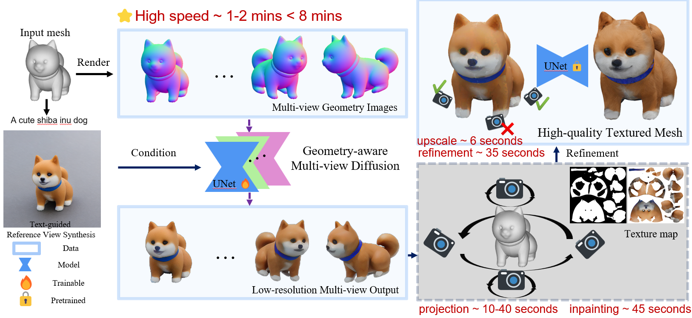

Abstract
Text-driven texture synthesis benefits applications like 3D asset design and texture editing. Current methods employ pretrained 2D diffusion models for this task, either by defining a canonical view sequence and inpaint view-by-view, or use a shared texture map to synchronize denoising of different views. However, this pipeline has two drawbacks. First, when inpainting one view, the model only considers the colored region visible in that view, resulting in view-inconsistency (a fish having one big and one small eyes) and Janus problem (multiple faces). Second, smooth transition between views usually requires large overlapping, requiring many views, and results in slow generation. Inspired by recent advancement in multi-view diffusion, GEM3D proposes a geometry-conditioned multi-view diffusion. Similar to existing diffusion-based texturing method, we exploit geometry cues, e.g., normal map, as condition. Instead of relying overlapping regions, we use cross-view attention that connects views even without overlapping, effectively reducing cross-view inconsistency. In addition, our method speeds up texture synthesis by utilizing fewer views and getting ride of sequential generation. Moreover, our method is compatible with existing post-processing methods and can further boost texturing quality after generation.
Texturize Results
View-Consistent Texturize
Input Mesh
Source views